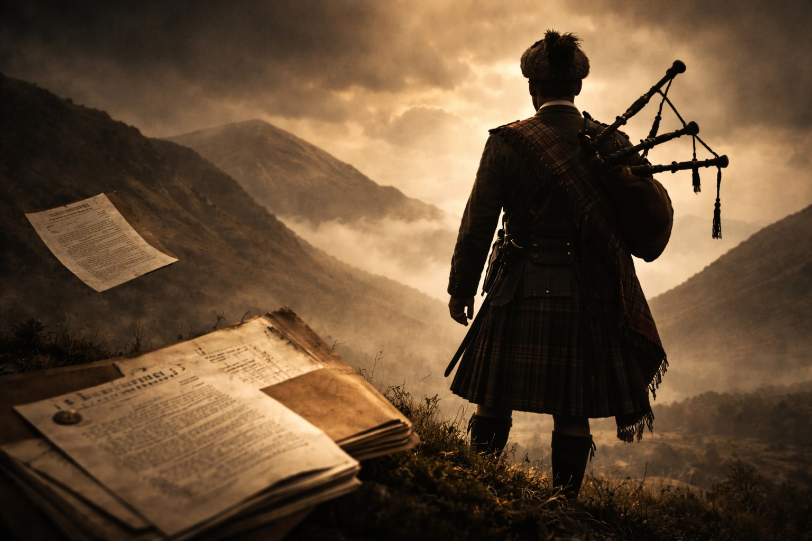

My grandfather was a gentle man who provided much-needed ballast in my stormy childhood. Content to dwell in my grandmother’s shadow, Arthur Green avoided confrontation and seldom raised his voice. What little humility and restraint glints through the crevices of these chapters, is the result of my interactions with this lovely man.
Bertha, my grandmother, was cut from a different cloth. She was a force of nature; and a more driven woman you would not find. We called her Gan, but I never asked why. After all, it is not a welcome prefix for Green.
Bertha was a businesswoman long before women were encouraged to excel. To her, making money and grafting was a raison d’etre. Just as I could root out the presence of informants and undercover coppers in my career, Gan could smell money-making opportunities from a mile off. From an impoverished upbringing in Harpurhey (north east of Manchester), she amassed a tidy sum of money, owning nine terraced houses in the Manchester area, which would have been a nest egg but for the Landlord & Tenant Act’s retrospective legislation, which gave rights to tenants, and their siblings, to remain in situ during their lifetimes.
In the mid-fifties, my grandparents moved to South Shore in Blackpool, living side-by-side with my father, Harry, in semi-detached houses in Abercorn Place. It didn’t take long for Gan’s entrepreneurial instinct to kick in there. She homed in on symbiotic activity in Fylde coast auction houses. She noted that the same, well-dressed people attended when expensive jewellery items were the main lots. She noted how possessions from the recently dearly-departed were catalogued and sold under the auctioneer’s hammer. And she found the nods, winks, side-looks and hand gestures between the bidders to be all too choreographed. In time, Gan, without asking permission, would morph into an uninvited member of their syndicate. She may have been the only female, but the males wisely decided to view Bertha as one of their own, and keep her on the inside ropes. She also made a substantial profit when she sold a block of garages in St Anne’s to the town’s Dalmeny Hotel, which now houses its leisure complex.
Her three grandchildren would benefit from Bertha’s business acumen. Like a female Santa, she would one day visit Rossall School’s bursar armed with a sack rammed with enough bank notes to secure our educational needs. Both grandparents would smile proudly as the three of us were paraded for them in blazers, shirts, shorts and ties. Harpurhey to Rossall School. Who would have thought?
Unlike me, my father had a strained relationship with Arthur. Harry seemed to possess all of Gan’s genes, and none of Arthur’s. A gentle man my father was not. For a time, though, Harry and Arthur did join forces, building and running a confectionery factory close to Blackpool Airport. The business duly took off, Arthur content to drive his beloved Ford Anglia while his sole offspring opted for a Bentley.
I smile in recalling that once my grandparents moved to St Anne’s every apartment drawer contained either Imps or Snow Mints, bittersweet reminders of the factory’s heyday before it folded when the government started levying VAT on even the smallest items. Just like the factory co-owners, the Imps were fiery, and the mints soothing.
*********
I have learnt that I am the product of my father, Douglas Harry Green. When in his care, my childhood brought me little comfort and a good deal of violence. Safety was absent within the family home and at Rossall Junior School.
The best example of just how dysfunctional the Green family are can be best conveyed by my attempts to contact Barbara, my birth mother. She had the good fortune to sod off before I could walk, or I may well have joined her. Barbara had become disillusioned with Harry, her Blackpool playboy, and fed up with finding knickers shoved down the back seat of his Bentley.
We had sporadic contact, but since I was six, nothing. By my early 20s, I resolved to speak with her, if only on the basis that Harry had set a low bar in parenting skills. When I was a bairn, my paternal grandmother would caution: “If you see the witch, just run away from her.” Advice I have yet to read in any book on the nurturing of children.
My route to Barbara was via a dotty but lovable relative, Edna. A good woman who I knew would keep my search to herself. After all, God forbid Harry should find out a child is attempting to find his mother. Edna had a love-hate relationship with my dad; on the rare occasion she wafted into our lives, she’d be subject to verbal abuse by him. It was all meant to be in high jinks, but it always ended up on the wrong side of funny.
I dialled Edna’s landline.
“Hello?”
“Hi Edna, it’s Nick – Dougie’s son.”
“Oh, hiya Nick – ooh, Dougie is a right bastard.”
No one has ever announced ‘bastard’ with as much gusto as Edna, who hailed from Moston, north Manchester. It flew from her lips, exploding into my ear.
“I am trying to find Barbara – do you know where she lives?”
“No, Nick – I only kept in touch with Joyce...’”My heart skipped a beat. I halted her ongoing rant against my pater.
“Edna...Edna...who is Joyce?”
Her reply floored me in its brevity.
“Dougie’s first wife.”
In my 20 odd years roaming the Fylde coast and beyond, I believed my mother, Barbara, to have been my father’s first bride. Only I, on searching for my birth mother, could flush out this salutary fact.
“Where is she?” I tentatively asked, concerned there may be half siblings to reunite with.
“Oh, Nick. She was shot dead by her son years ago.”
This reply is seared on my brain to this day. Did the murderer have my DNA? Edna, thankfully, confirmed another man, not Harry, sired this killer.
As I hung up the phone (which we did in those far off days), I sat in stunned silence. I had the small task of disclosing a matricide to my two older brothers. In time, this conversation would cause howls of laughter, but in real time it was shocking.
From the leads I had got from Edna I managed to track down my estranged mother’s phone number. “Hello,” a soft female voice announced. “Is that Barbara?” I asked. “Yes. Who are you?” Choking with emotion, I replied, “It’s Nick”. Her response was not all I had dreamt of: “Nick who?”
I was later to learn that after divorcing Harry she had given birth to another child (her fourth) and promptly had it adopted. On reflection, “Nick who?” was a seemingly reasonable response.
After establishing that I had once suckled on her breast, she said: “Oh, I am so pleased - I really want to see Douglas” , my eldest brother. I had watched films and television programmes on this, family reunions were meant to be uplifting, momentous occasions. This one hit the bottom of the barrel. I had bonded better with Joyce!
Unlike my absent mother, regretfully my dad was a constant presence. Governed by his desire to accumulate money, his kids came second best. His phrase ‘he’s a dolly daydream’ captured his dislike for any individual who drifts through life without drive and ambition, or someone who accepts ‘no’ for an answer and waits patiently in line.
********
My grandfather’s temperament and outlook on life was sculpted by his First World War service. He had lied about his age and, so, at only seventeen and a half years of age he joined the Seaforth Highlanders as an infantryman. Why a Seaforth regiment? I don’t know. But he was duly despatched to the trenches of Northern France, where adulthood was an aspiration, not a given.
During one fierce and bloody battle over the ownership of a few muddy French acres, Arthur was spied on by his commanding officer leaving the battlefield. The brigadier rode up to my grandfather on horseback, raising his rifle to his shoulder. Arthur heard the click of the safety catch release but, thank God, he had the presence of mind to lift his left arm. This young, but no longer innocent teenager had been shot through the wrist and was losing consciousness and blood. Arthur was no deserter, but a youth in need of urgent medical attention. His life was saved in a nearby medical tent, but he permanently lost the use of the last two fingers on his left hand, forever paralysed, the two fingers remaining embedded in his palm. When my grandad pointed, it appeared that he was holding a revolver.
The disfigurement would not always be apparent. Indeed, a large painting of my grandparents commissioned for their golden wedding anniversary contained a fib. On canvas, Arthur’s left hand, draped over Bertha’s shoulder, had a full quota of fingers. Smiling out at us was an elderly man who, retouched in paint, had never witnessed wartime France.
In his seventies, Arthur received an untimely missive on government notepaper telling him that his war pension would be halted. The pension was a pittance, but it was my grandad’s pittance, and an acknowledgement by the State of his near-death experience as a teenager on the battlefield. Arthur duly appealed the decision, attending a London tribunal in a tartan kilt, sporran and beret, war medals gleaming from his jacket, to address and entertain the phalanx of pen-pushers and the war pension committee as only Arthur could. After a wonderfully flamboyant, if somewhat lengthy speech, he departed, having been told his pension would not only be reinstated but index-linked. With this, he was the first Green family member to enter the world of advocacy.
Arthur’s wartime stories led me to reject religion forever. Divinity lived not in the trenches. ‘It is God’s will’ or ‘God moves in mysterious ways’ are statements that make me nauseous, not spiritual. It was by chance, not divine intervention, the branches of my family tree would grow rather than end as a stump in a French field. With a different outcome, the British judiciary would have avoided my reign of terror.
With the First World War as a torrid backdrop, my grandfather resolved to enjoy life. Too many of his comrades had failed to return to their families not to. Assisted by Bertha’s new-found wealth, he was bitten by wanderlust, and they were the first to take advantage of the golden age of liners traversing the globe. My well-travelled wife, Sue, is agog at the places my grandparents visited, places which are remote by any standards even today - Bora Bora, Panama, Solomon Islands, Easter Island, Samoa, Cook Islands and Papua New Guinea to name a few. All these exotic, far flung islands were captured by Arthur on his beloved cine camera.
I write this in Bali overlooking the Indian Ocean, where, six decades previously, my grandparents would have journeyed to islands that had rarely seen caucasians. Harpurhey to Bora Bora. Who would have thought? I smile as my eyes drop to Sue’s index finger on which Bertha’s wedding ring rests. But for Arthur’s love for travel, his wife would have happily remained in England, interested in nothing more than accumulating wealth. Yet, the cine footage shows a carefree and contented woman.
When my two brothers and I came into the world, Bertha doted on us. Summer holidays were spent travelling across Europe with Arthur at the wheel. Five of us squashed into a campervan whose roof concertinaed , making more space at bedtime. Arthur’s sense of direction was guided by an oft-repeated phrase: ‘Follow your nose’. When this mantra failed, Bertha would wind the passenger window down and, in a high-pitched voice, squeal ‘Scuze! Scuze!’, delivered with conviction as if it were the internationally-recognised word for persons in distress. A man would then walk over and bend down to offer directions, normally in a foreign tongue, leaving us to pool linguistic skills and attempt to decipher hand gestures. Our campervan would set off, but minutes later European ears were once again subjected to ‘Scuze! Scuze!’ as three young boys howled with laughter from the rear seats.
I nearly died on one of those trips. On a lakeside campsite in France, aged six, I had swum out of my depth towards a diving board. My young brain had not computed that, when I turned to make the short return journey, the soil my grandad had fought on would not be beneath my feet. I would not die as a war hero, but as a non-swimmer. In the event, a Dutchman on holiday with his family saved me. In fact, he saved two lives, as my brother Howard’s attempts to rescue me were rebuffed when I used his head as a buoyancy aid. Howard, a bad asthmatic, gave a wheezing, woodwind accompaniment to my flautist’s squeals. The Dutchman suffered chest injuries, striking pebbles with his initial dive into the inches-deep water, to save us. I thank that bleeding, unknown soldier for his valiant efforts and, to this day, meekly ask Sue to test the depth of luxury hotel swimming pools. Only when I receive a thumbs up does this gnarly defence lawyer submit to agua sin gas.
Back in Blighty, trips to Blackpool Football Club with Arthur were a welcome respite from my father. Arthur would signal when he wanted me to slip under a Bloomfield Road turnstile unnoticed, and I’d sit on his knee. I got to know the other season ticket holders on the same row, and joined in the footy banter - jeering as another Ray Charnley strike ended high in the stands. I’d watch a skilful young Tony Green (no relation), whose career would be cut short by injury, preventing him from becoming a giant of the game like other tangerine alumni Ball, Armfield, Mortensen and Hughes.
Away from football, Arthur taught me to play cribbage and backgammon, the former game featuring the cry ‘And one for his nob’ (where a player holds the jack of the same suit as the start card). These days, such a call would result in an entry on the sex offenders’ register.
Arthur was a keen philatelist, and my ‘spending’ money would be used to purchase the latest British stamp releases to be stuck in albums. Arthur’s collection was immense, and many stamps hailed from South Pacific islands. I’d look at him in awe as he confirmed which ones he and Bertha had visited. He introduced me to bird-watching which, unlike philately, remains a hobby (sic) to this day. We would wander around Ashton Gardens in St Anne’s and he would identify birds’ names, with their Latin equivalents, from only their song.
I’m currently poolside in Doha, where a Mynah bird is pecking on a biscuit brought with my coffee. This species was for years, on our walks in Ashton Gardens in a caged shed. It seems that wherever I wander, Arthur is close.
‘For he is with me and his rod and staff comfort me.’
I recall his love of all-in wrestling. I would watch as his swivel armchair became a swirling dervish as he acted out the moves of Mick McManus and Giant Haystacks. This was years before WWF. Even at that tender age, I couldn’t comprehend Arthur’s animated responses to such a ‘sport’.
My love of sport meant injuries came thick and fast. My grandfather would tend to them with either New Skin or iodine. The latter he would smother on my fingernails, turning them nicotine yellow, so I wouldn’t bite them. I regret that this habit persists to this day, and Sue is unable to look at the state of my cuticles. “If you would not stop for Arthur, then I have no chance,” she correctly identifies.
My grandparents were due to celebrate their Diamond wedding anniversary when Bertha was taken ill. She passed away before a toast could be made. As she lay on her hospital bed, her final words to me were to ask if I had nothing else to do than visit her. When I whispered no, she ordered: “‘Well, find something.’” This was not said in jest, but was a firm instruction from a woman that, as I left Blackpool’s Victoria Hospital, I knew I would not see again. She had mellowed in old age, preferring a ‘life is too short’ philosophy to the battle cries of her youth. She had, through sheer determination and talent, raised her family above the poverty line. I learnt that Bertha died peacefully that night, taking to death, as she had life, with valour and determination. I hope, for all my many faults, I have been a grafter and a go-getter, just like her.
Our fear that her husband would soon follow her to the grave would prove misplaced. This ex-Seaforth Highlander could face any foe, including loneliness. It would not disarm him. After all, his life in Bertha's shadow had been of his choosing.
At the time of her death, I was about to head to university in Liverpool to study law. I returned at weekends to play cricket and hockey for St Anne’s first elevens. I would stay with Arthur, and would often be a little worse for wear after pints with my teammates.
I learnt that my grandfather had joined the Conservative Club, eight hundred yards from his flat, as an out-of-town member. He stood as a Liberal in local elections, but the pull of a free read of the daily papers and a bit of banter with Conservative members prompted him to sign up. His presence was welcomed among the membership - he was a beloved character, and the club turned a blind eye to his false claim to a reduced ‘out of town’ membership fee.
At my wedding, Arthur took pride of place at the top table. I was his favourite grandchild so he had invited family over from Canada. At the evening bash, I enjoyed watching him enthral guests with tales from afar. When his left arm was raised, and the revellers gasped, I knew which story he was imparting.
Arthur’s grace and serenity were seldom my traits when under fire. Yet, without his influence in my early years, I doubt that I would be nearly 60, nor have sustained (with bumps) a second marriage now heading for its twenty-first year.
The beatings I suffered in childhood halted my progress into a rounded adult. At Southdene pre-school, a pair of middle-aged sisters considered violence to be central to the educational curriculum. Like a Nazi hunter, I remember their faces and names (Miss Howarth and Miss Binks). If I had associated a wooden ruler with learning rather than violence, then my life (and mathematical ability) would surely have panned out differently.
One day I rebelled, refusing to be subjected to any more cracks with the weapon. I may even have pushed one of the virgos intacta. I was expelled and stood trembling at the school gates waiting for my father to arrive. To this day I know not why the man who would beat me at home turned on the two sisters instead. Perhaps he viewed my expulsion as a slight on his character. I learned, in time, that Southdene had shut, and that the two abusers had been barred from the education system.
From the Southdene frying pan, I headed into the Rossall Junior School fire in Fleetwood, where headmaster Mr Budge (he never did!) agreed to enrol me early, even though I wasn’t yet eight. I winced as my father told him to ensure that I did not step out of line. If corporal punishment was required, ‘so be it’, he’d say. I would quickly learn that Budge needed no green light to administer beatings. Now I would stand in line with other pupils outside Budge’s study for twice weekly beatings with a cane, the torturer’s weapon of choice. His wife, so distraught at his delectation for physical abuse, had ordered the study to be soundproofed. Budge would, in his clipped Scottish accent, tell my eldest brother that “Nicholas is an arrogant little man.” I put in a timely guilty plea to this charge, as I refused to show contrition. Unlike other boys, who openly wept as they left the study clutching their reddening buttocks.
When this child abuser died of an early heart attack, I was by then enjoying life without fear in Rossall Senior School. My father wanted the whole Green clan in a pew in Rossall’s chapel to bemoan the loss of a fine man. Parents adored Budge and the Junior School’s reputation had advanced under his leadership. But I would not salute his departure. As the hymns rang out at the funeral service, I was absum (absent). I was fucked if I would take part in a charade, and would willingly suffer the beating, which I knew would follow from my pater for bringing shame upon the family. ‘One tyrant less’, I thought. It was the one time I believed that ‘It is God’s will’, and if He had only caught up with Howarth and Binks, I would have become a fervent worshipper at His altar.
Arthur’s final days were spent enjoying winter sunshine in Andalucia. His visit coincided with a spate of bombings by Basque separatists. A Daily Mail reporter asked this elderly gentleman if he would be packing up early and returning to the safety of British shores. Arthur’s reply appeared in national print the following day:
‘Mr Arthur Green of St Anne’s on Sea, an ex-Seaforth Highlander in WWI, confirmed he would be remaining in southern Spain. His reasoning being: “These bombs aren’t big enough to blow off my kilt.”’
Tears of laughter would quickly become tears of sorrow. Arthur suffered a fatal heart attack in his Spanish hotel. My comrade (not in arms) had departed, and the Seaforth Highlander would, indeed, return home from mainland Europe in a coffin. At this juncture, I suggest an addition to the Beatitudes:
‘Blessed are the warped of mind for they shall forever rest in mirth.’
St Peter was present at the Pearly Gates to welcome another ‘out of towner’. I’m sure Arthur entered giggling as he heard a high-pitched cry in the distance. ‘Scuze. Scuze.’ Amen.
Page 1 of 1